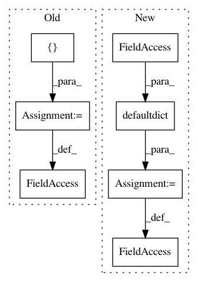

abb4e425ff57acad92d42e92a6c76526a3b49e27,softlearning/samplers/simple_sampler.py,SimpleSampler,__init__,#SimpleSampler#,7
Before Change
self._path_length = 0
self._path_return = 0
self._infos = []
self._last_path_return = 0
self._max_path_return = -np.inf
self._n_episodes = 0
self._current_observation = None
After Change
self._path_length = 0
self._path_return = 0
self._current_path = defaultdict(list)
self._last_path_return = 0
self._max_path_return = -np.inf
self._n_episodes = 0
self._current_observation = None
In pattern: SUPERPATTERN
Frequency: 3
Non-data size: 7
Instances
Project Name: rail-berkeley/softlearning
Commit Name: abb4e425ff57acad92d42e92a6c76526a3b49e27
Time: 2019-02-04
Author: hartikainen@berkeley.edu
File Name: softlearning/samplers/simple_sampler.py
Class Name: SimpleSampler
Method Name: __init__
Project Name: rail-berkeley/softlearning
Commit Name: abb4e425ff57acad92d42e92a6c76526a3b49e27
Time: 2019-02-04
Author: hartikainen@berkeley.edu
File Name: softlearning/samplers/simple_sampler.py
Class Name: SimpleSampler
Method Name: sample
Project Name: dgasmith/opt_einsum
Commit Name: 89997c33639c7a7802bd53f1d6298e09085d3fbb
Time: 2018-08-25
Author: jcmgray@users.noreply.github.com
File Name: opt_einsum/sharing.py
Class Name:
Method Name: